In this section, we will begin the development of the workbook shown in Figure 1.1 "Example of an Excel Worksheet with Embedded Chart". The skills covered in this section are typically used in the early stages of developing one or more worksheets in a workbook.
Follow-along file: Excel Objective 1.0 (This is a blank workbook that was named in the previous section. If you skipped the previous section, open a new workbook and save it with the file name “Excel Objective 1.0.”)
We will begin building the workbook shown in Figure 1.1 "Example of an Excel Worksheet with Embedded Chart" by manually entering data into the worksheet. There are other ways in which you can bring data into an Excel worksheet, such as importing data from a website or a Microsoft Access database. However, we will demonstrate these other methods later. The following steps explain how the column headings in Row 2 are typed into the worksheet:
Repeat step 4 for the words Average Price and Sales Dollars.
Figure 1.17 "Entering Column Headings into a Worksheet" shows how your worksheet should appear after you have typed the column headings into Row 2. Notice that the word Price in cell location C2 is not visible. This is because the column is too narrow to fit the entry you typed. We will examine formatting techniques to correct this problem in the next section.
Figure 1.17 Entering Column Headings into a Worksheet
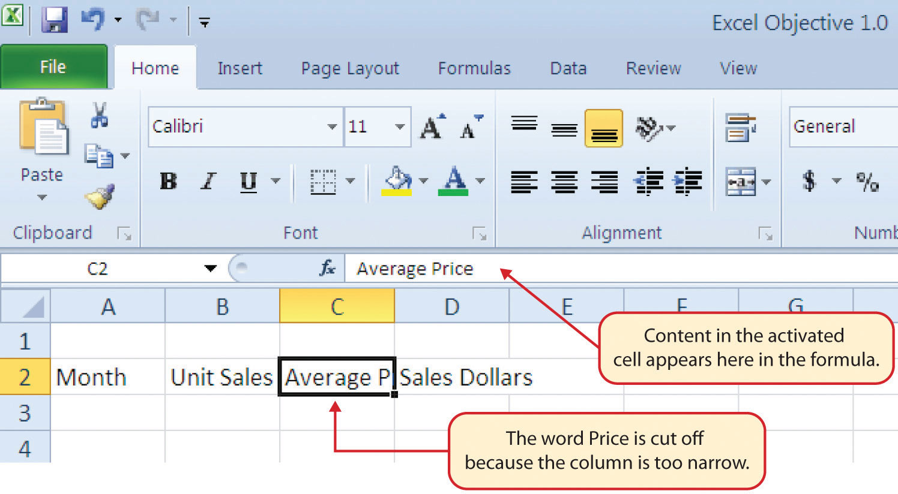Column Headings
It is critical to include column headings that accurately describe the data in each column of a worksheet. In professional environments, you will likely be sharing Excel workbooks with coworkers. Good column headings reduce the chance of someone misinterpreting the data contained in a worksheet, which could lead to costly errors depending on your career.
Repeat step 7 by entering the following numbers in cells B4 through B14: 2160, 515, 590, 1030, 2875, 2700, 900, 775, 1180, 1800, and 3560.
Avoid Formatting Symbols When Entering Numbers
When typing numbers into an Excel worksheet, it is best to avoid adding any formatting symbols such as dollar signs and commas. Although Excel allows you to add these symbols while typing numbers, it slows down the process of entering data. It is more efficient to use Excel’s formatting features to add these symbols to numbers after you type them into a worksheet.
Data Entry
It is very important to proofread your worksheet carefully, especially when you have entered numbers. Transposing numbers when entering data manually into a worksheet is a common error. For example, the number 563 could be transposed to 536. Such errors can seriously compromise the integrity of your workbook.
Figure 1.18 "Completed Data Entry for Columns B, C, and D" shows how your worksheet should appear after entering the data. Check your numbers carefully to make sure they are accurately entered into the worksheet.
Figure 1.18 Completed Data Entry for Columns B, C, and D
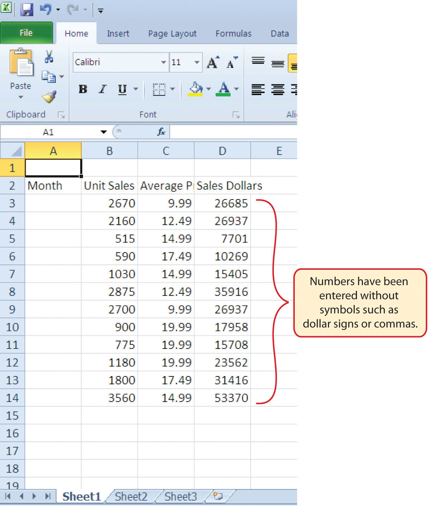Follow-along file: Excel Objective 1.0 (Use file Excel Objective 1.01 if you are starting with this skill.)
Data that has been entered in a cell can be changed by double clicking the cell location or using the Formula BarThe area just above the column letters on a worksheet. It can be used for entering data into cells as well as for editing data that already exists in cells.. You may have noticed that as you were typing data into a cell location, the data you typed appeared in the Formula Bar. The Formula Bar can be used for entering data into cells as well as for editing data that already exists in a cell. The following steps provide an example of entering and then editing data that has been entered into a cell location:
Click the checkmark to the left of the Formula Bar (see Figure 1.19 "Using the Formula Bar to Edit and Enter Data"). This will enter the change into the cell.
Figure 1.19 Using the Formula Bar to Edit and Enter Data
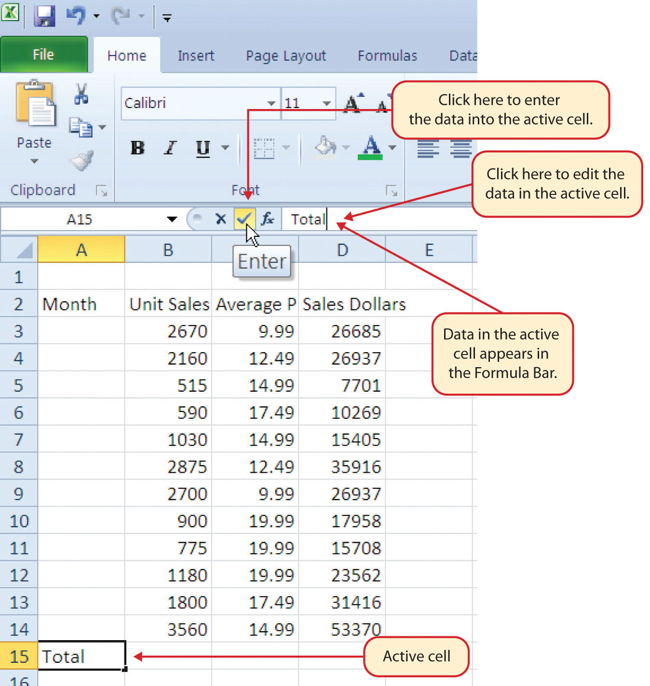Editing Data in a Cell
Follow-along file: Excel Objective 1.0 (Use file Excel Objective 1.02 if you are starting with this skill.)
The Auto FillAn Excel feature used to complete data in either a quantitative or qualitative sequence. It can also be used to copy and paste data in a worksheet. feature is a valuable tool when manually entering data into a worksheet. This feature has many uses, but it is most beneficial when you are entering data in a defined sequence, such as the numbers 2, 4, 6, 8, and so on, or nonnumeric data such as the days of the week or months of the year. The following steps demonstrate how Auto Fill can be used to enter the months of the year in Column A:
Move the mouse pointer to the lower right corner of cell A3. You will see a small square in this corner of the cell; this is called the Fill HandleA small square in lower right corner of an activated cell. When the mouse pointer gets close to the Fill Handle, the white block plus sign turns into a black plus sign. (see Figure 1.20 "Fill Handle"). When the mouse pointer gets close to the Fill Handle, the white block plus sign will turn into a black plus sign.
Figure 1.20 Fill Handle
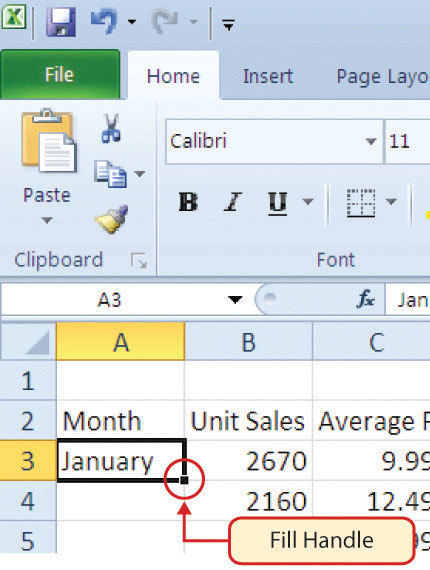Left click and drag the Fill Handle to cell A14. Notice that the Auto Fill tip box indicates what month will be placed into each cell (see Figure 1.21 "Using Auto Fill to Enter the Months of the Year"). Release the left mouse button when the tip box reads “December.”
Figure 1.21 Using Auto Fill to Enter the Months of the Year
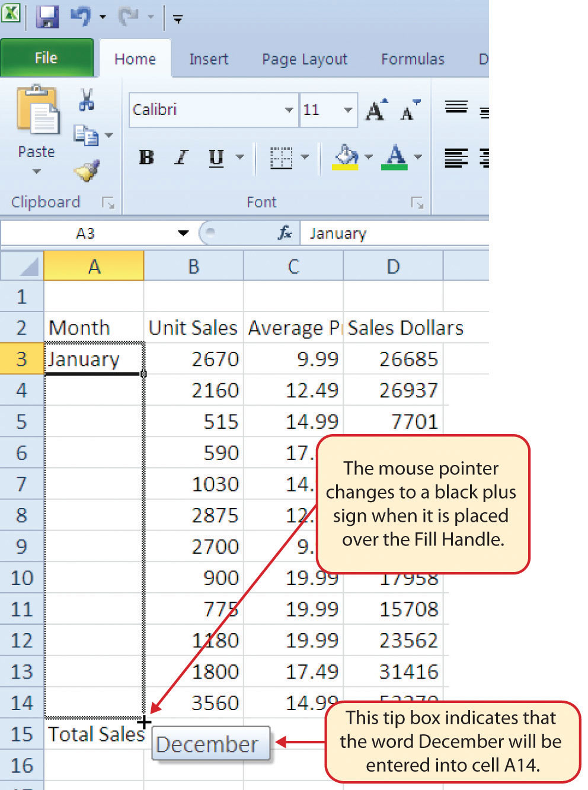Once you release the left mouse button, all twelve months of the year should appear in the cell range A3:A14, as shown in Figure 1.22 "Auto Fill Options Button". You will also see the Auto Fill Options button. By clicking this button, you have several options for inserting data into a group of cells.
Figure 1.22 Auto Fill Options Button
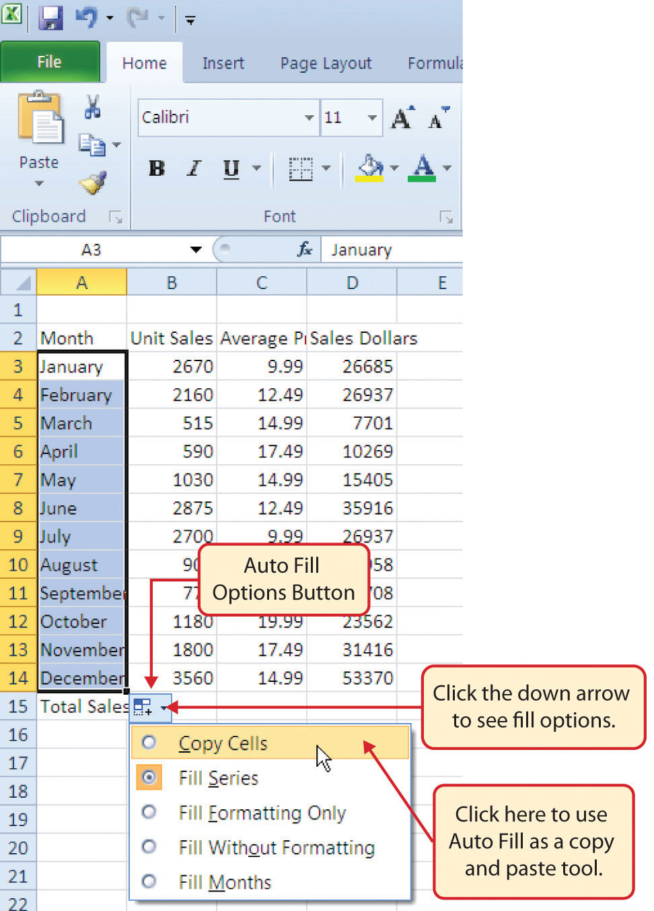Follow-along file: Excel Objective 1.0 (Use file Excel Objective 1.03 if you are starting with this skill.)
There are several methods for removing data from a worksheet, a few of which are demonstrated here. With each method, you use the Undo command. This is a helpful command in the event you mistakenly remove data from your worksheet. The following steps demonstrate how you can delete data from a cell or range of cells:
Left click and drag the mouse pointer up to cell C3 (see Figure 1.23 "Using Auto Fill to Delete Contents of Cell"). Release the mouse button. The contents in the range C3:C14 will be removed.
Figure 1.23 Using Auto Fill to Delete Contents of Cell
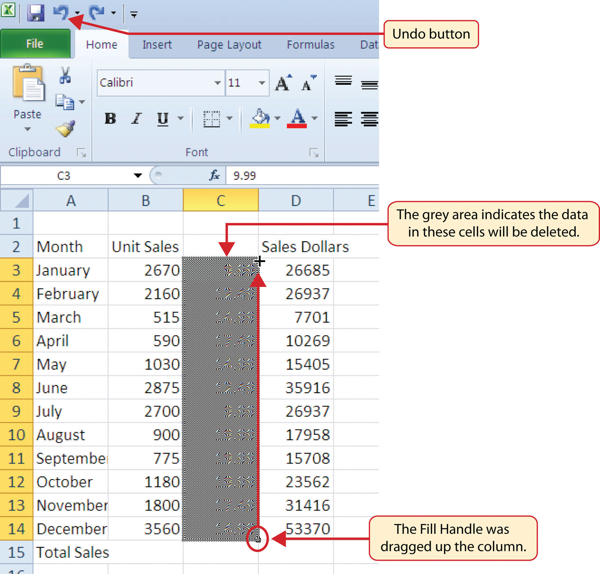Click the Undo button again. This should replace the data in cell C2.
Undo Command
Figure 1.24 Clear Command Drop-Down Menu
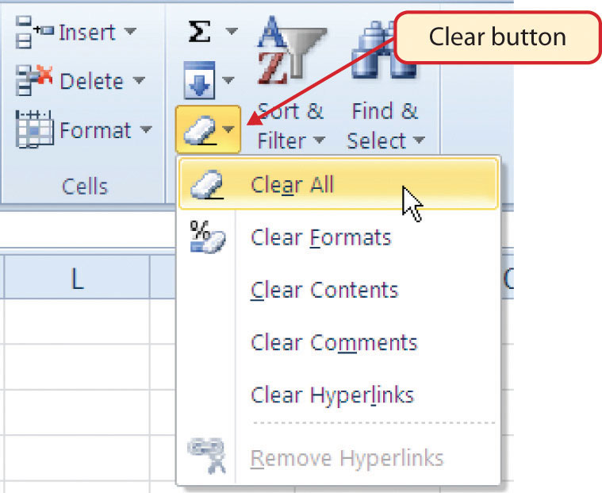Follow-along file: Excel Objective 1.0 (Use file Excel Objective 1.03 if you are starting with this skill.)
In Figure 1.22 "Auto Fill Options Button", there are a few entries that appear cut off. For example, the last letter of the word September cannot be seen in cell A11. This is because the column is too narrow for this word. The columns and rows on an Excel worksheet can be adjusted to accommodate the data that is being entered into a cell. The following steps explain how to adjust the column widths and row heights in a worksheet:
Release the left mouse button.
Figure 1.25 Adjusting Column Widths
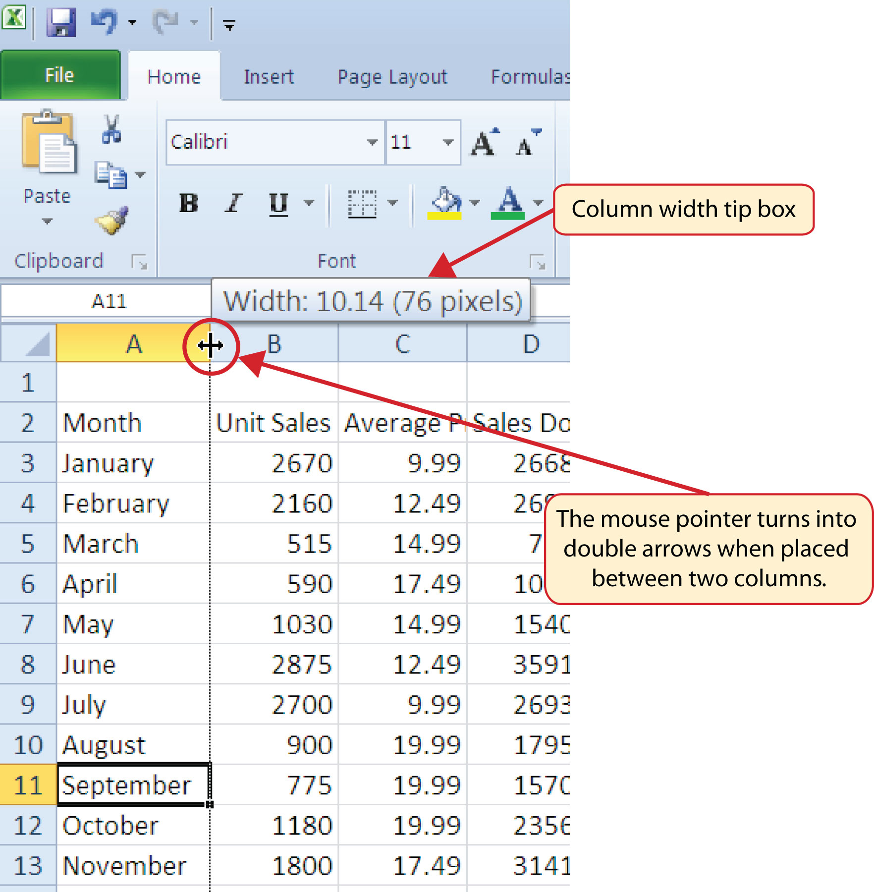You may find that using the click-and-drag method is inefficient if you need to set a specific character width for one or more columns. Steps 4 through 7 illustrate a second method for adjusting column widths when using a specific number of characters:
Type the number 13 and click the OK button on the Column Width dialog box. This will set Column A to this character width (see Figure 1.28 "Column Width Dialog Box").
Figure 1.26 Cells Group in the Home Tab
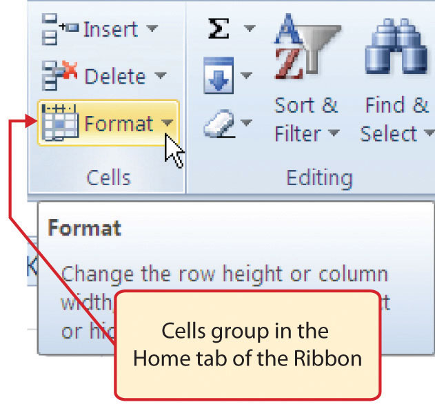Figure 1.27 Format Drop-Down Menu
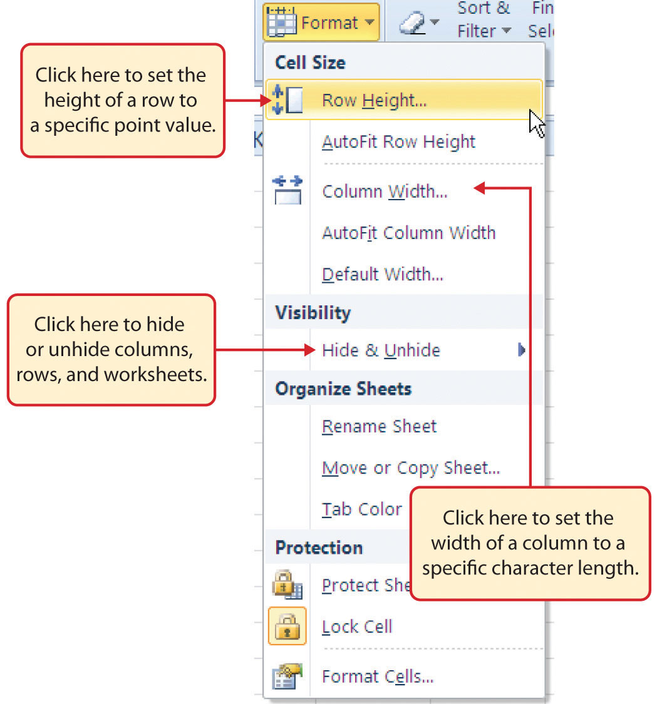Figure 1.28 Column Width Dialog Box
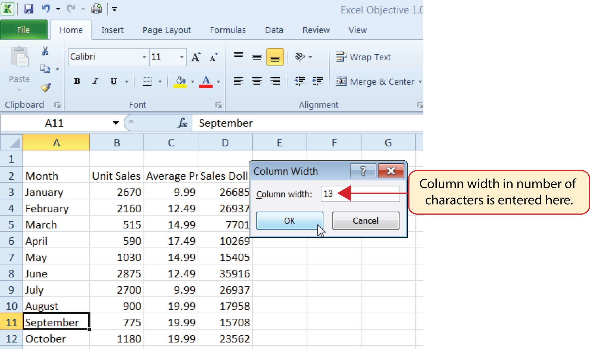Column Width
Steps 8 through 10 demonstrate how to adjust row height, which is similar to adjusting column width:
Row Height
Figure 1.29 "Excel Objective 1.0 with Column A and Row 15 Adjusted" shows the appearance of the worksheet after Column A and Row 15 are adjusted.
Figure 1.29 Excel Objective 1.0 with Column A and Row 15 Adjusted
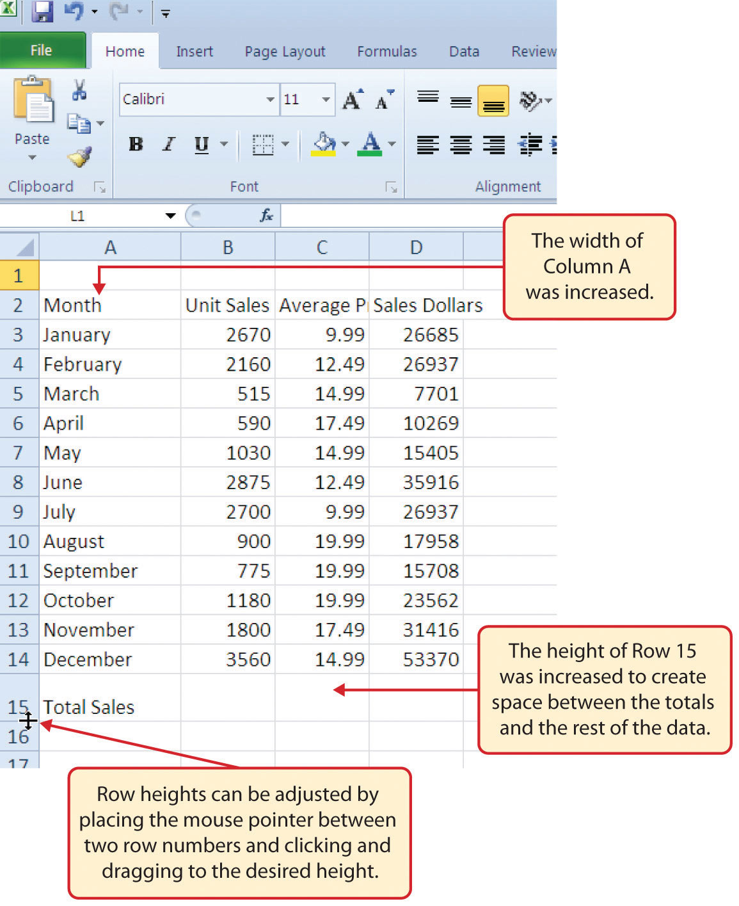Follow-along file: Excel Objective 1.0 (Use file Excel Objective 1.04 if you are starting with this skill.)
In addition to adjusting the columns and rows on a worksheet, you can also hide columns and rows. This is a useful technique for enhancing the visual appearance of a worksheet that contains data that is not necessary to display. These features will be demonstrated using the Excel Objective 1.0 workbook. However, there is no need to have hidden columns or rows for this worksheet. The use of these skills here will be for demonstration purposes only.
Click the Hide Columns option in the submenu of options (see Figure 1.30 "Hide & Unhide Submenu"). This will hide Column C.
Figure 1.30 Hide & Unhide Submenu
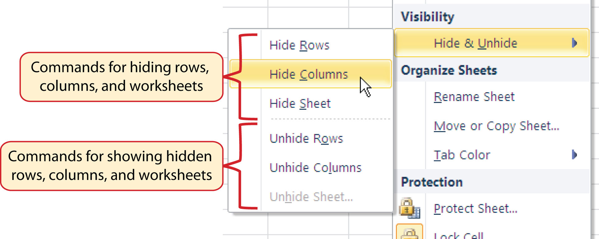Hiding Columns
Figure 1.31 "Hidden Column" shows the workbook with Column C hidden in the Sheet1 worksheet. You can tell a column is hidden by the missing letter C.
Figure 1.31 Hidden Column
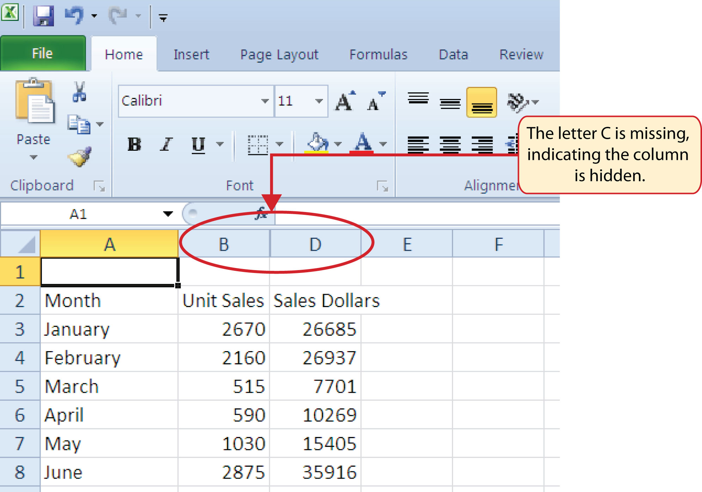To unhide a column, follow these steps:
Click the Unhide Columns option in the submenu of options (see Figure 1.30 "Hide & Unhide Submenu"). Column C will now be visible on the worksheet.
Unhiding Columns
The following steps demonstrate how to hide rows, which is similar to hiding columns:
Click the Hide Rows option in the submenu of options (see Figure 1.30 "Hide & Unhide Submenu"). This will hide Row 3.
Hiding Rows
To unhide a row, follow these steps:
Unhiding Rows
Hidden Rows and Columns
In most careers, it is common for professionals to use Excel workbooks that have been designed by a coworker. Before you use a workbook developed by someone else, always check for hidden rows and columns. You can quickly see whether a row or column is hidden if a row number or column letter is missing.
Follow-along file: Excel Objective 1.0 (Use file Excel Objective 1.04 if you are starting with this skill.)
Using Excel workbooks that have been created by others is a very efficient way to work because it eliminates the need to create data worksheets from scratch. However, you may find that to accomplish your goals, you need to add additional columns or rows of data. In this case, you can insert blank columns or rows into a worksheet. The following steps demonstrate how to do this:
Click the down arrow on the Insert button in the Home tab of the Ribbon (see Figure 1.32 "Insert Button (Down Arrow)").
Figure 1.32 Insert Button (Down Arrow)
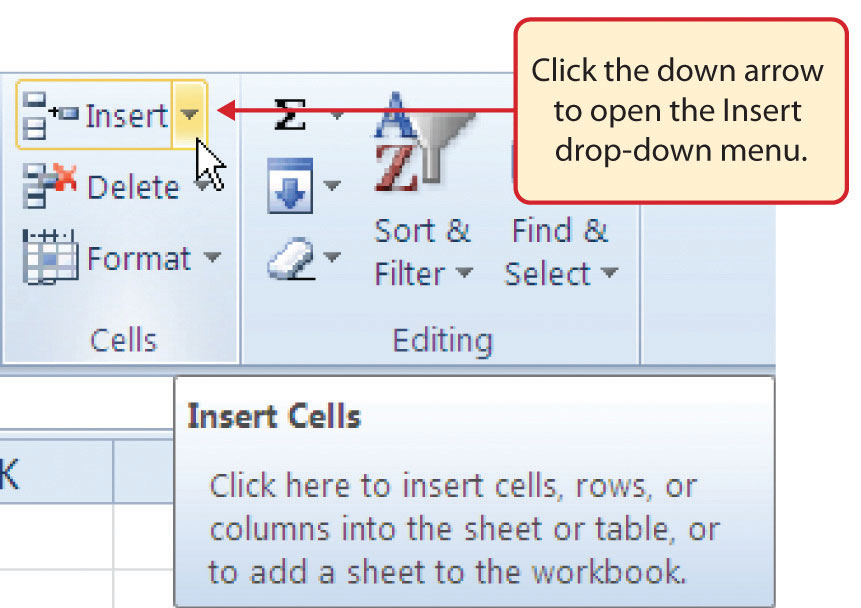Click the Insert Sheet Columns option from the drop-down menu (see Figure 1.33 "Insert Drop-Down Menu"). A blank column will be inserted to the left of Column C. The contents that were previously in Column C now appear in Column D. Note that columns are always inserted to the left of the activated cell.
Inserting Columns
Figure 1.33 Insert Drop-Down Menu
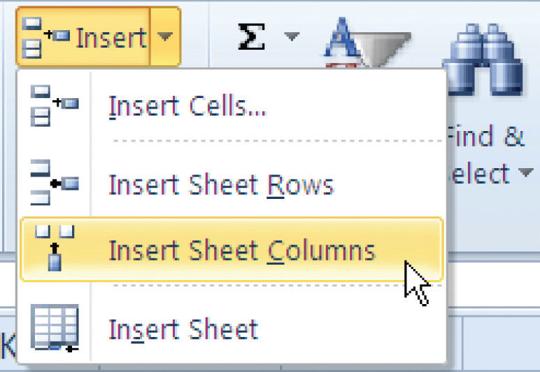Inserting Rows
Follow-along file: Excel Objective 1.0 (Use file Excel Objective 1.05 if you skipped the previous skill and are starting with this skill.)
Once data are entered into a worksheet, you have the ability to move it to different locations. The following steps demonstrate how to move data to different locations on a worksheet:
Bring the mouse pointer to the left edge of cell D2. You will see the white block plus sign change to cross arrows (see Figure 1.34 "Moving Data"). This indicates that you can left click and drag the data to a new location.
Figure 1.34 Moving Data
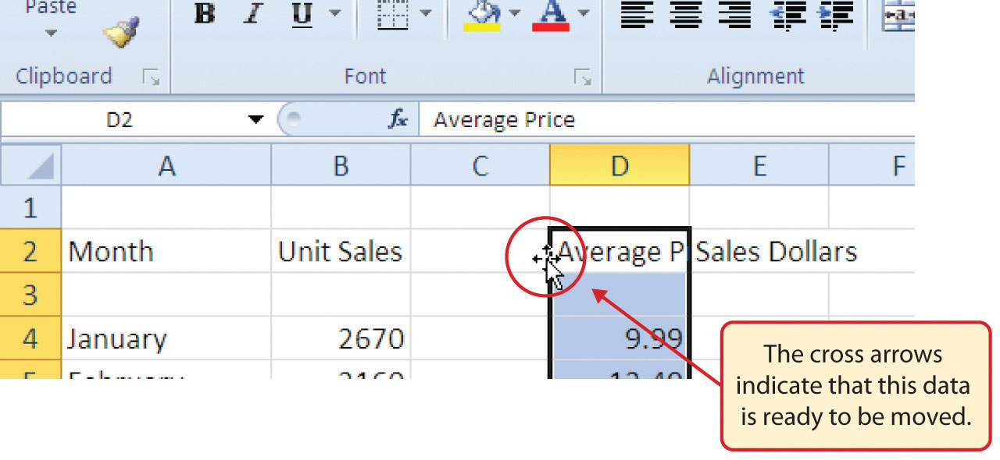Moving Data
Before moving data on a worksheet, make sure you identify all the components that belong with the series you are moving. For example, if you are moving a column of data, make sure the column heading is included. Also, make sure all values are highlighted in the column before moving it.
Follow-along file: Excel Objective 1.0 (Use file Excel Objective 1.05 if you are starting with this skill.)
You may need to delete entire columns or rows of data from a worksheet. This need may arise if you need to remove either blank columns or rows from a worksheet or columns and rows that contain data. The methods for removing cell contents were covered earlier and can be used to delete unwanted data. However, if you do not want a blank row or column in your workbook, you can delete it using the following steps:
Click the Delete Sheet Rows option from the drop-down menu (see Figure 1.35 "Delete Drop-Down Menu"). This removes Row 3 and shifts all the data (below Row 2) in the worksheet up one row.
Deleting Rows
Figure 1.35 Delete Drop-Down Menu
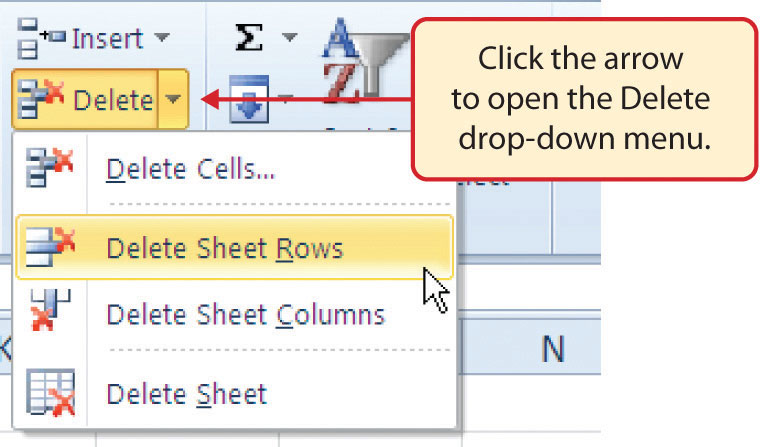Deleting Columns
When entering numeric data into an Excel worksheet, you should omit symbols such as commas or dollar signs because:
Which of the following statements is true with respect to editing the content in a cell location?
Which of the following will enable you to identify hidden columns in a worksheet?
Which of the following is true with respect to inserting blank rows into a worksheet?